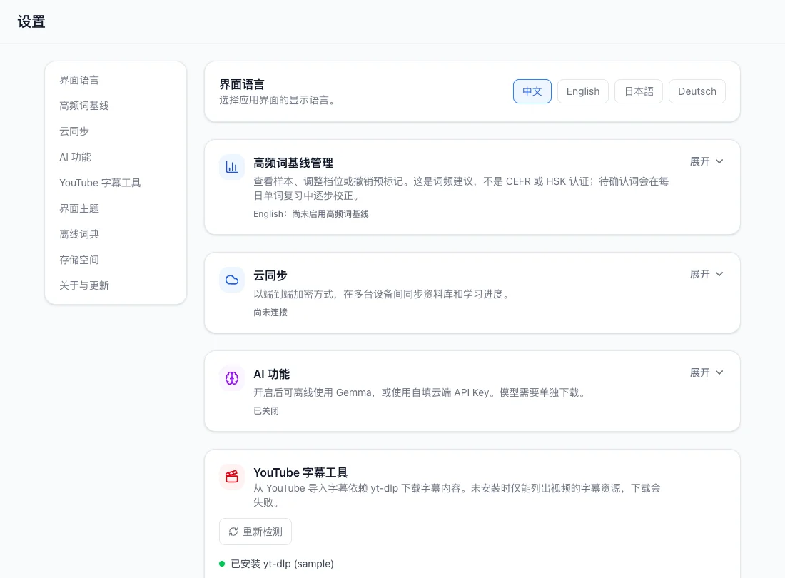
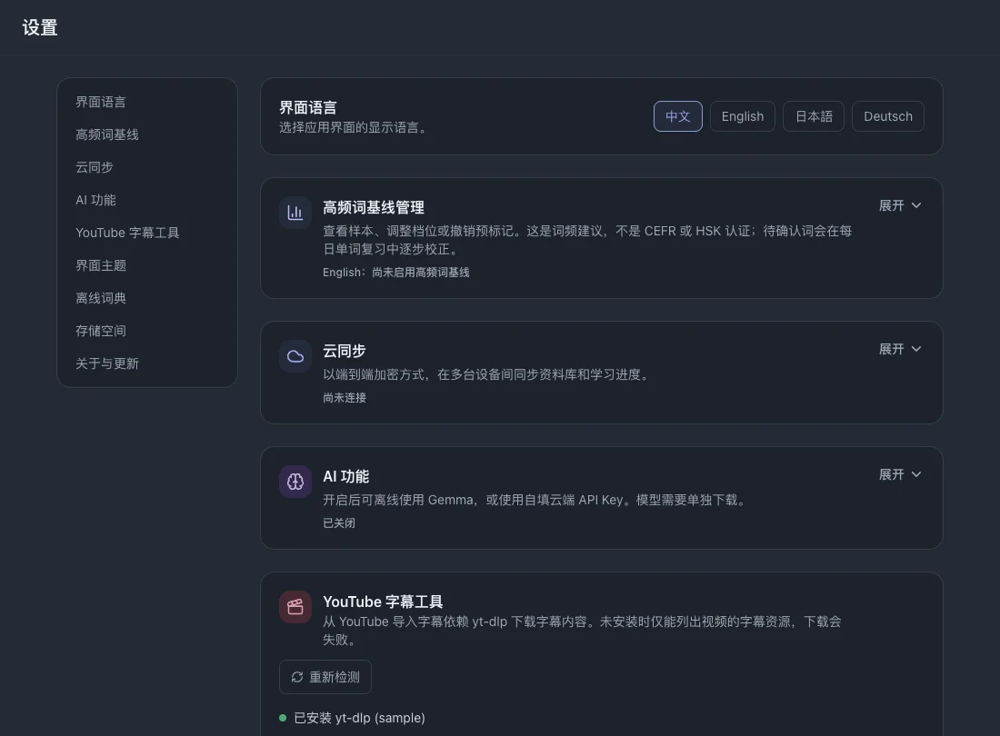

设置
这里介绍安装版的设置。可选联网功能与本地阅读、查词和复习分别配置。
本页目录
界面语言
在设置中选择英语、中文、日语或德语。它改变按钮与界面文字，不改变字幕的学习语言。



高频词起步
- 展开高频词设置，选择英语或中文。
- 选择 1,000 至 10,000 词的范围，预览后应用自己已经熟悉的范围。
- 需要撤销时使用撤销入口，先阅读确认提示。
云同步
同步为可选联网功能。学习记录加密后传输；生成恢复码时请妥善保存。
- 展开云同步，注册或登录账号。
- 在另一台设备使用同一账号，再执行同步并检查状态；自动同步可以单独开启。
相关操作备份与恢复
AI 分析
- 开启 AI，选择本地 Gemma 或云端 API。
- 本地 AI 需下载或导入兼容模型并选用。下载模型需要联网，准备完成后可本地推理。
- 云端 AI 需配置服务地址、自己的 API 密钥与模型，再检查连接。所选文本会发送给该提供方。
相关操作理解语境与词组
YouTube 导入
在此检查工具状态。桌面环境可能需要 yt-dlp 及其运行依赖，按应用显示的平台说明配置。
浏览器会话选项为可选功能，并受平台限制；仅在来源需要登录状态时使用。
相关操作获取 YouTube 字幕
主题
可选择 ocean、sage、twilight、amber 或 midnight。主题只改变外观，不改变学习数据。
词典管理
- 展开词典管理，查看已安装来源与支持语言。
- 按需导入兼容词典包。移除导入来源会影响可用释义，请阅读删除确认提示。
存储
展开存储查看应用数据及各部分占用。对资料库进行删除等操作前，先导出备份。
相关操作备份与恢复
应用更新
在设置中检查更新。发现新版本后，按当前平台提供的安装或下载入口操作。